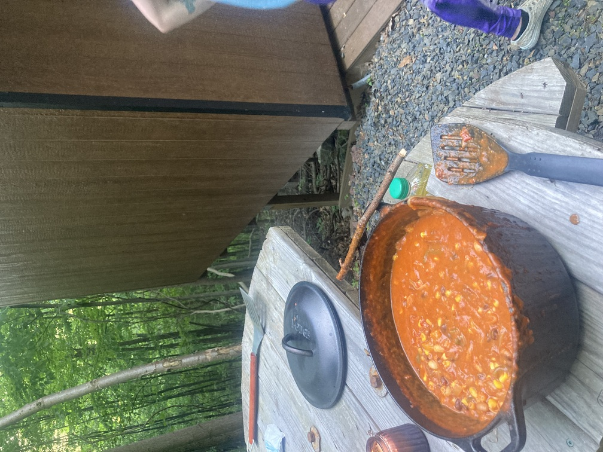

Bean Stew

Description
This is a recipe for a vegetarian bean stew recipe I made while out camping once. The ingredients are readily available at any supermarket and comes out to around $15.
Ingredients
- 2 Bell Peppers
- 2 Onions
- 2 Jalapeno Peppers
- 2 Cans of Beans (Any Kind)
- 2 Cans of Crushed Tomatoes
- Salt
- Pepper
- Chili Pepper Flakes
- Canola Oil
- "Mexican" Cheese Mix
Steps
- Cut up peppers and onions
- Sautee vegetables in campfire safe pot with oil, stirring ocaisonally
- After vegetables are sauteed, add beans and cook while stirring for 2 minutes
- Add crushed tomatoes, keep stirring for 2 more minutes
- Add dry ingredients, stir
- Remove from heat and add cheese mix